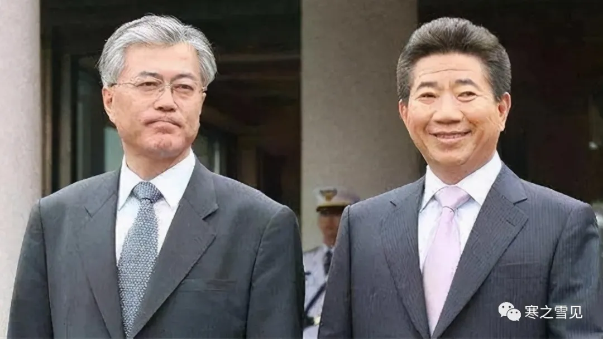
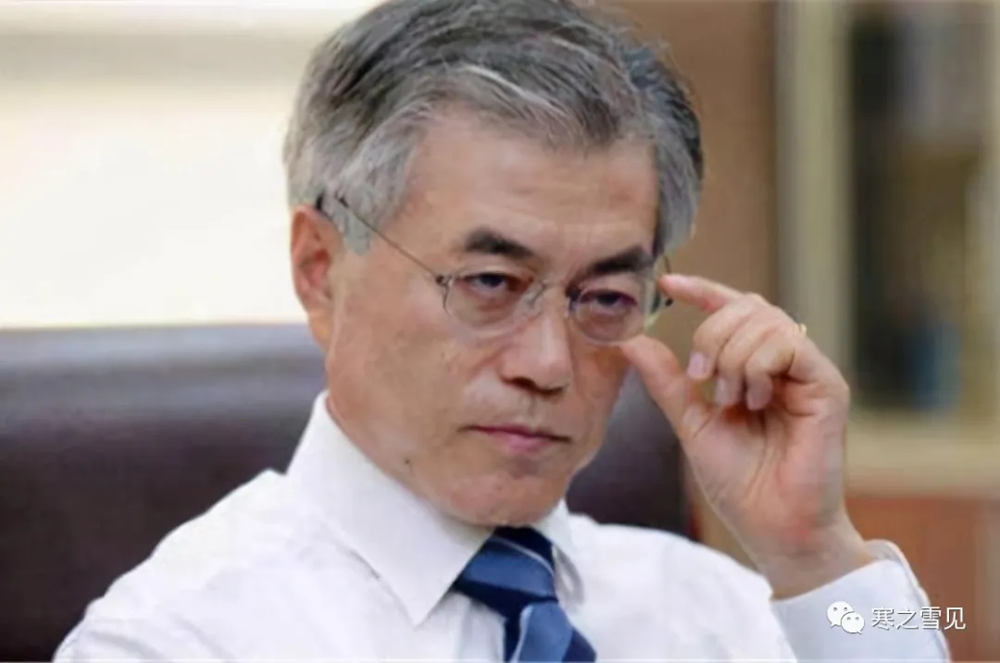
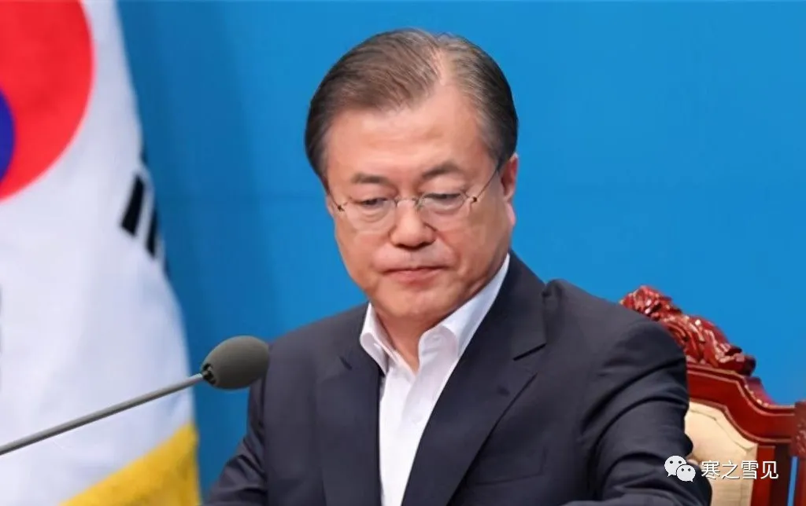
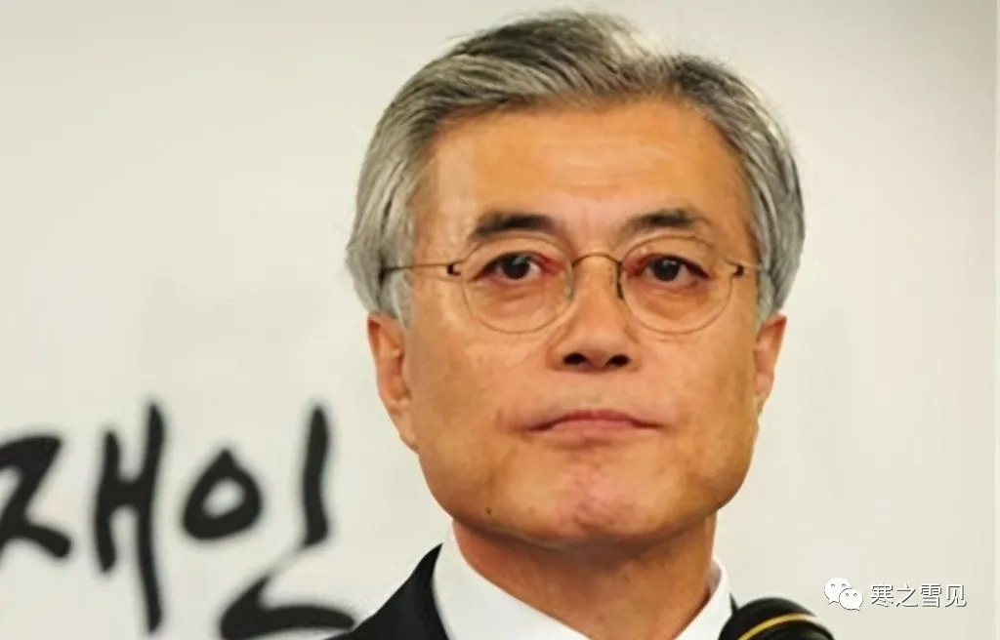
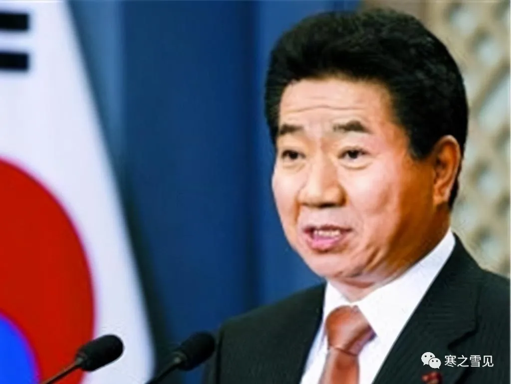
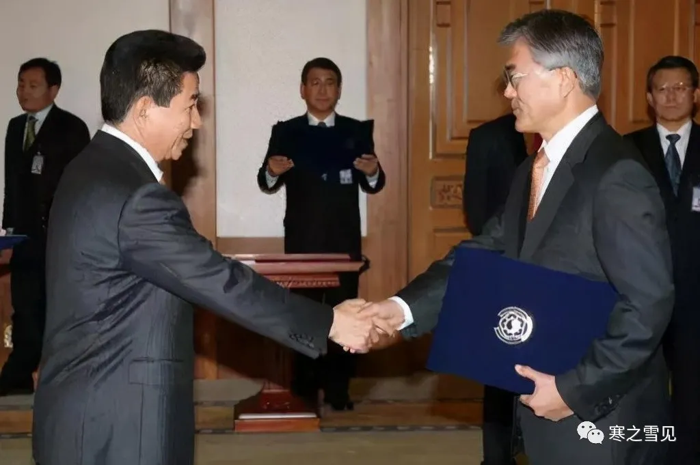
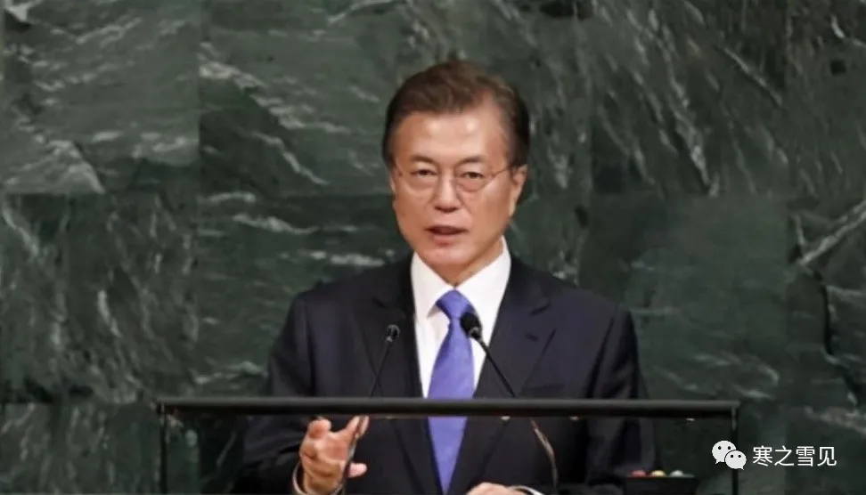
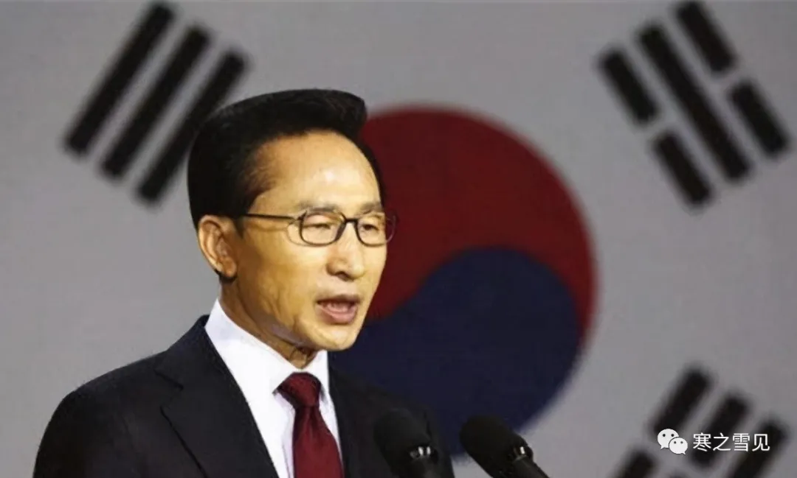

Moon Jae-in's Road of Revenge: Korea's Last Hero
文在寅的复仇路：韩国最后的英雄
This article was originally published on my WeChat Official Account on November 15, 2020, and is reposted here.
On November 2, 2020, former South Korean president Lee Myung-bak began serving his sentence. Before entering prison, he left the world with one line — "I will stay strong." But no one knew whether this white-haired, weathered 78-year-old, sentenced to 17 years, would ever walk out through those iron gates again.

In these turbulent, ever-shifting times, many have forgotten what crimes of his were worth pursuing so belatedly. But one man will never forget — the sitting South Korean president, Moon Jae-in.

Chinese netizens gave Moon Jae-in a near-legendary nickname — "Heaven-Sent Tough Guy," meaning a savior sent to rescue the nation from its plight. But beyond the grand political ambition of fixing the state machinery, Moon harbored only one personal wish — revenge. For Roh Moo-hyun.

Since his leap on May 23, 2009, Roh Moo-hyun has been gone from this world for years. No matter how many wronged people he once cleared, no matter how he struggled and schemed for Korea's future, few still remember him. All that's left in public chatter are the hard-to-verify rumors of "a $6 million bribe" and "suicide to prove his innocence."

Moon Jae-in refused to let his closest friend fall into history bearing scandal, to be forgotten. In his memoir, with the tender line "May I become the river, and meet you again," he extended Roh Moo-hyun's posthumous name — and walked the road of no return toward the South Korean presidency, to personally clear his friend's name and avenge him.

At the crossroads of power and tragedy, Moon Jae-in chose to be a warrior, ready to die for the one who understood him. His road of revenge is Korea's last hero's journey.

Youth: Struggling Through Turbulent Politics

Moon Jae-in was born in 1953 to refugee parents. The family drifted without a fixed home for years, surviving on odd jobs. Moon's youth was one of exceptional hardship — at one point he was thrown out of class for unpaid tuition, and fell in with classmates, smoking and drinking.

But he refused to accept his fate. Diligent and studious, he ultimately won a full scholarship to Kyung Hee University on academic merit, and began studying law — then considered a "golden" profession.

South Korea was then under Park Chung-hee, who abolished the national constitution outright to consolidate power, provoking public fury. People took to the streets against the dictatorship, and the young, justice-minded, hot-blooded Moon Jae-in joined them. When the military government sent troops to crush the protests, Moon was arrested — losing his student status and spending a year in prison.
After release, he received his draft notice from the 1st Special Forces Airborne Brigade. Through sheer will and outstanding performance, Moon was repeatedly named an exemplary soldier in the grueling unit. After discharge he returned to school, but his passionate nature was unchanged — he joined another anti-chaebol protest, was arrested again, and was quickly released thanks to his teacher's intercession.
With two prison records, Moon could not sit the judicial exam. He turned to practicing law instead.
Career as a Lawyer: Kindred Spirits Advancing Human Rights
Law is a gold-rush profession — those chasing money circle around finance and politics. But Moon, broke yet proud, scorned that path. He turned down lucrative offers from firms serving the chaebols, and partnered up with Roh Moo-hyun.
Roh, also from a poor family and fiercely upright, was then looking for a partner to open a firm. At their first meeting — two cups of plain tea in the office — one told of protests and schooling, the other of defending the grassroots in court. Their yearning for justice and light mirrored each other; their resonance and admiration mirrored each other. They became confidants at first sight.
And so the two agreed to be clean, honest lawyers together, founding the Roh Moo-hyun & Moon Jae-in law firm. Human-rights lawyering is the hardest, least lucrative branch of the profession — but the two found pride and fulfillment in it.
Among the vast caseload they handled, Roh is best known for the Burim case — the real-life basis of the film "The Attorney" — while Moon is best known to Chinese readers for winning reprieves from the death penalty for six ethnic-Korean fishermen. In those years, like saviors, they spoke up for the poor and ran themselves ragged for them, earning the broad public's firm support and trust.
In those lawyer years, Roh and Moon lived out their lofty ambitions — and touched the darkness of the entire society. Where would suffocating politics and the all-shadowing chaebols' oppression of the grassroots ultimately take Korea? After deep reflection, the high-minded Roh developed a burning desire for change — not to change the law, but to change all of Korea.
Roh Moo-hyun's Political Road: An Idealist's Tragic Epitaph
Roh fought his way through politics from 1980, taking eight years to become a National Assembly member, and announced his presidential run in 1991. Through all this, Moon focused on the law firm, with no interest in politics — until Roh invited Moon to chair his election committee.
It was trust in a like-minded friend, and an invitation to a feast of social transformation. Moon did not refuse. After Roh won the presidency, Moon became his chief secretary.
Roh's ambitions were nothing if not grand: crush the chaebols and give back to the people; push U.S. forces out of Korea and reclaim wartime operational command; purge Park Chung-hee-era pro-Japanese collaborators; demand Japan resolve postwar legacies; promote peaceful development between the two Koreas.
These beautiful, idealistic platforms cut flesh and drew blood from the three great powers looming over Korea — America, Japan, and the chaebols — and met obstruction and opposition on every front.
The crushing pressure left Moon gasping — in 2003 alone he had ten teeth pulled. He finally had to resign, traveling with his wife to decompress. But just a month later, Roh faced impeachment over the North Korean nuclear crisis and a series of other issues.
Moon rushed back to save his embattled friend, assembling a full legal team for his defense and joining supporters in candlelight marches in the streets — ultimately saving Roh's office. At Roh's request, Moon returned to the Blue House, becoming the "president's shadow," staying with Roh until he left office in 2008.
Moon was only 55 then, yet his hair was already white — he looked seventy. He had burned himself out assisting his friend, and felt immense relief when the mission was done. Afterward, he and Roh moved to the countryside for a pastoral life, visiting each other now and then, tending flowers and plants, planning to spend their remaining years in peace. But a crueler storm was soon upon them.
After Hyundai executive Lee Myung-bak won the presidency, he swiftly attacked Roh — launching an investigation on the grounds that Roh had taken copies of presidential documents, digging like a grave-robber through most of Roh's friends and family. In the end, investigators claimed his wife and brother had accepted $6 million, a house, and a watch — and the media sensationalized it relentlessly.
Though his wife stated it was only one million — and borrowed, with an IOU to prove it — the overwhelming tide of public opinion drowned everything out. Unproven charges, along with the public's spit and curses, surged toward this man of lifelong integrity who prized his reputation above all, pushing him into the abyss.
On May 23, Roh Moo-hyun died to prove his innocence, leaping from Owl Rock, putting the most tragic full stop on his life. His friend's wrongful death struck Moon Jae-in hard. His rage and grief had nowhere to go, and could not be spoken — but a flame quietly kindled in his heart, burning away his old detachment, burning forth his ruthlessness.
He would have revenge — for that idealist fighter, and for his own beliefs.
Moon Jae-in's Revenge: A Patriot's Road of No Return
Roh Moo-hyun's funeral was grand, with Moon Jae-in presiding as chief mourner. People wept bitterly over the tragic end — while Lee Myung-bak, the architect of the tragedy, brazenly showed up. An outraged lawmaker spat curses at him on the spot, accusing him of killing Roh through political retaliation and demanding an apology.
The most grief-stricken of all, Moon Jae-in, swallowed everything and personally bowed in apology to the hypocrite who had killed his friend. Yet Lee still sued that lawmaker afterward. From then on, Moon began plotting a long-game revenge.
In 2012, as Lee Myung-bak's term neared its end, Moon — who had always avoided the political front lines — went on the offensive. Drawing on his deep credentials, he won a National Assembly seat, then aimed straight for the presidency. But Park Geun-hye was unstoppable that year, and Moon lost. Undiscouraged by one defeat, he chose to lie low and wait for his chance to come again.
In 2016, Park Geun-hye — still in office — was exposed in the "confidante meddling in state affairs" scandal. Then the Sewol ferry disaster, cult organizations, chaebol collusion and a host of other issues were turned inside out, provoking fierce public condemnation. Moon knew his moment had come again.
The next year, Park was impeached, removed, and imprisoned. Moon won the new presidential election in a landslide. After eight years of patient endurance, he finally sat on that cursed throne — and finally stood at the center of the altar of revenge.
After taking office, he appointed the lawmaker — sued for cursing Lee Myung-bak at Roh's funeral — to investigate corruption. The probe found Lee had taken 40 million in bribes, delivering a sharp karmic blow to the man who had killed Roh Moo-hyun under the banner of bribery.
Park Geun-hye stood trial on May 23, 2017; Lee Myung-bak stood trial on May 23 the following year. On Roh Moo-hyun's death anniversary, Moon Jae-in offered memorial rites — and began his long confrontation with those invisible killers.
From his human-rights lawyer days to Roh Moo-hyun's death, Moon Jae-in regarded the chaebols as his lifelong enemy. He pushed sweeping reforms, jailed Samsung's Lee Jae-yong, and dragged chaebols down through the celebrity prostitution scandal — never pausing his campaign against them.
At the same time, he inherited Roh's other political tenets: refusing America's exorbitant troop-cost demands, refusing to yield to Japan's "white list" threats and territorial disputes...
The man who once lost all his teeth as chief secretary withstood the pressures of the presidency, steering Korea between China, America, and Japan over the years — step by step carrying out his revenge, while seeking a brighter, more independent path for a Korea manipulated by many powers.
Moon Jae-in: Hero or Antihero? Success or Failure?
Whether by the fates of past Korean presidents or by his own stated policies, it is clear Moon Jae-in walks a road of no return. He knew the danger himself — sending his family abroad early, prepared for a "Shang Yang's reforms, torn apart by chariots in the marketplace" end.
This politician who charged toward the tiger knowing the mountain held tigers — loyal, resilient, accomplished in both letters and arms, fearless of death — carried all the heroic colors his people admired. His fated tragic end did not diminish his stature; it won his people's sympathy and added mythic luster. Hence the internet's highest praise: "Korea does not deserve Moon Jae-in."
But is Moon Jae-in truly an absolutely pure hero? Perhaps not.
He could churn the seas in politics and elections; bow to Lee Myung-bak at a funeral; pay respects at the grave of his rival Park Chung-hee; find room to survive between China, America, and Japan; quietly ship in THAAD equipment after promising not to expand it; humbly call to build ties the moment Biden won. He was nothing like the flawless figure people worshipped — he was a slick, cunning, flexible antihero whose bottom lines could be broken.
Is Moon Jae-in a victor? In winning the presidency and on the road of revenge, yes. But by his record in office, not quite a success.
Over those years, he achieved nothing of real substance politically — reforms stalled, constitutional revision failed, the chaebol crackdown yielded little, domestic jobs and the economy did not improve, the inter-Korean deadlock did not ease, relations with America and Japan froze, ties with China stayed lukewarm. Even his post-COVID plan to expand medical school enrollment died in protests and resistance...
None of his domestic or foreign policies counted as successes for his people. Before COVID broke out, his approval ratings slid all the way down, nearly to the point of collapse.
But Moon Jae-in may truly be heaven's chosen — COVID saved his approval ratings. America was too consumed by the pandemic to mind him; Samsung chief Lee Kun-hee's death that October cracked an iron plate of the chaebols... Every time decline loomed, a black swan came to his aid.
Like Roh Moo-hyun, Moon Jae-in faced obstacles on all sides with meager results — but he was far luckier. With that luck, though no great success, at least he was not broken halfway, and still had room to maneuver. The Moon Jae-in we see today is a stirring hero — but what he truly looks like, we cannot know.
The once-reviled Park Chung-hee can be re-enshrined as a god of wealth; the once-exalted Park Geun-hye fell in disgrace to scandal. It shows that neither politics nor life can ever be summed up in a few short years, a few events, a few fine-sounding memoirs. Whether Moon Jae-in succeeded, and how much he deserves respect, needs time to answer.
You and I are but passersby; empathizing with the heart of one inside the drama really fulfills our own long-cherished wishes. Rather than distort everything with guesswork, better to wait for the curtain to fall, then savor it all — and only then sing a complete hymn to the true hero.
本文于2020年11月15日首发于微信公众号，转载至此。
2020年11月2日，韩国前总统李明博正式服刑，入狱前留给世人一句“我会坚强”，但没人知道这个头发花白、神情沧桑、被判了17年刑的78岁老人还有没有机会走出那扇禁闭的铁门。
风起云涌，世事百变的当下，很多人已经淡忘他犯过什么值得延时追溯的罪行，但有一个人绝不会忘，那就是现任韩国总统——文在寅。
中国网民赋予了文在寅一个近乎彪悍的称号——天降猛男，寓意挽救国家困顿的神人，但除了矫正国家机器这个政治宏愿外，文在寅的私愿其实只有一个——复仇，为卢武铉。
自2009年5月23日纵身一跃，这世上已没有卢武铉多年，不管他曾经为多少人昭雪冤情、为韩国的未来怎样挣扎谋算，铭记他的人已经不多了，被议论纷纷的只剩真假难辨的“受贿600万美金”和“跳崖明志”传闻。
文在寅却不肯让挚友背负丑闻陨落在历史之中，就此被人遗忘，他在自传中以一句深情的“愿为江水，与君重逢”延长了卢武铉的身后之名，并走上“韩国总统”这条不归路，为的是亲身为挚友正名、为他报仇昭雪。
在权势与悲剧的交叉路口，文在寅选择做士，准备好了为知己者死，他的复仇路，是韩国最后的英雄之路。
青葱岁月，在翻涌的政治下挣扎度过
文在寅出生于在1953年，父母是流落的难民，一家人居无定所多年，靠打零工度日。
文在寅的少年时代过得异常清苦，一度因交不起学费被赶出课堂，跟同学混在一起抽烟喝酒放纵。
但他不认命，又勤勉好学，最终还是凭借优异的成绩拿到了庆熙大学的全额奖学金，开始攻读被视为“黄金专业”的法学。
当时的韩国政府被朴正熙把控，朴正熙为收拢权利直接废除了国家宪法，激起了民愤。
人们走上街头游行，反对独裁，心怀正义、年轻气盛的文在寅也加入其中。
军政府派兵镇压抗议时，文在寅被捕了，为此他丢掉了学籍，蹲了一年监狱。
出狱后，他收到了特种第一空降旅发来的入伍通知。
凭借坚强意志和出色表现，文在寅在严酷的部队里多次被评为优秀士兵。
退伍之后他回到了学校，但依然不改热血秉性，又一次参加了反财团游行，结果再次被捕，最终在老师的游说之下很快出狱。
因为两次入狱前科，文在寅无法报考法官，最终转到了律师行业。
律师生涯，知己携手推进人权事业
律师是一个掘金行业，想赚钱的都围着金融、政治转圈，但没钱却有志气的文在寅不屑于此。
为此他拒绝了几家为财阀服务的事务所提出的优厚待遇，与卢武铉搭了伙。
卢武铉也是穷人家出身，性格极其正直，当时正打算找合伙人一起开事务所。
初次相见，办公室里两杯清茶，两人一个诉说自己游行和上学的故事，一个聊起自己为底层平民打官司，他们对正义和光明的向往恰如彼此，共鸣和欣赏也恰如彼此，一见知交。
就这样，两人约定一起做清清白白的律师，一起成立了卢武铉文在寅律所。
人权律师是最艰难、最不赚钱的行业，但两人在这份工作里找到了自豪与成就感。
在他们处理过的海量案件中，卢武铉最为人周知的是电影《辩护人》的原形釜林事件，文在寅最为中国人熟知的是为6名朝鲜族渔船劳工免除死刑案件。
那些年，他们像救世主一般，到处为穷人发声、为穷人奔走，换来了广大民众的鼎力支持和信任。
律师生涯的那些年，卢武铉和文在寅践行了自己的高远宏愿，也触摸到了整个社会的黑暗。
令人窒息的政治、遮天蔽日的财阀压迫者底层人，最终会将韩国带向何方？
志存高远的卢武铉在深思这些问题之后产生了一种强烈的变革意愿，不是变革法律，而是变革整个韩国。
卢武铉政治之路，理想主义者的悲情墓志铭
卢武铉自1980年开始一路在政界打拼，花了八年成为国会议员，91年宣布参加总统竞选。
这期间文在寅一直专心打理律所，对从政毫无兴趣，直到卢武铉邀请文在寅做自己选举委员长。
这是出于对志同道合的朋友的信任，也是邀他共赴一场社会变革的盛宴，文在寅没有拒绝。
卢武铉成功当选总统后，文在寅成了他的首席秘书官。
卢武铉的野心不可谓不大，他的政治目标是打压财阀，让利民众；劝退驻韩美军，拿回战时指挥权；清算朴正熙等亲日派；要求日本解决战后遗留问题；提倡朝韩和平发展。
这些美好而理想的政治主张都是在美、日、财阀着三大笼罩韩国的势力身上挖肉、放血，受到了全方位的阻挠和反对。
文在寅被巨大的压力压得喘不过气来，2003年一年之内他拔了10颗牙，最终不得不辞掉工作，与妻子旅游散心释放压力，但没想到一个月之后卢武铉就因朝核危机等一系列问题受到弹劾。
文在寅赶忙赶回拯救孤军奋战的挚友，联络了一整个律师团为其辩护，跟着支持者在街头参加烛光游行，最终保住了卢武铉的职务。
在卢武铉的请求之下，文在寅再次回到了青瓦台，成了“总统之影”，一直陪伴卢武铉到08年卸任。
当时年仅55岁的文在寅已经头发花白，宛如古稀老人，为了协助好友他敖干了心血，完成助攻任务，他如释重负。
之后，他与卢武铉一起搬到乡村过上了田园生活。
两人时不时互相探望，养花弄草，打算就此安度余生，然而很快一场更残酷的暴风雨就来了。
现代集团代表李明博成功当选继任总统后，火速对卢武铉发起了攻击，以他带走了一份总统任期内的复印材料为由对其发起调查，挖祖坟一般将卢武铉大部分亲友都带走调查。
最终查到其妻子和哥哥收受过600万美元、一套房子和一块手表，消息被媒体大肆渲染。
虽然其妻子声明只有一百万，而且是借的，有借条为证，但排山倒海的舆论淹没了一切，没有确切罪证的罪名和民众的唾骂与口水一起涌向这个一生清明、最重声誉的人身上，将他推向了深渊。
5月23日，卢武铉以死明志，从猫头鹰岩跳下，给自己的人生画上了最悲剧的句号。
挚友含冤而死给文在寅带来了巨大冲击，他的愤恨、悲痛无从诉说，也不可诉说，但一簇火苗却在他心里悄然燃起，烧没了他往日的淡薄之心，烧出了他的狠绝。
他要复仇，为那个理想主义斗士、为自己的信仰。
文在寅的复仇，志士的不归路
卢武铉的丧礼举办得很隆重，文在寅主丧，人们为他的悲惨结局痛哭流涕，而悲剧的塑造者李明博居然大摇大摆去参加了丧礼，一位义愤的议员当场唾骂他以政治报复害死了卢武铉，要他谢罪。
最为悲痛的文在寅却压下了一切，亲自向这个害死自己朋友的伪君子鞠躬道歉，可惜之后李明博还是起诉了那位议员。
那之后，文在寅图谋起一场来日方长的复仇大计。
12年，李明博任期即将结束，一向回避政治冲锋的文在寅主动出击了，他凭借深厚的资历成功当选国会议员，而后目标直指总统竞选。
但那一年的朴槿惠势如破竹，文在寅最终落选。
文在寅并没有因为一次落选灰心，选择继续蛰伏，等待机会再次降临。
16年，任期未尽的朴槿惠被爆出闺蜜干政事件，随即世越号、神教组织、勾结财阀等一系列问题被翻了个底朝天，引起民众强烈声讨和反对。
文在寅知道，他的机会又来了。
第二年，朴槿惠被弹劾下台，进了监狱。
文在寅在新一任总统竞选中大获全胜，卧薪尝胆了8年，他到底坐上了那张被诅咒的王座，也终于走到了复仇祭坛的中央。
他上台后，任命卢武铉丧礼上因唾骂李明博被起诉的议员调查贪污腐败问题，最终查出李明博受贿4000万，给了那个以受贿名头害死卢武铉的人狠狠一记现世报。
17年5月23日朴槿惠受审，隔年5月23日李明博受审，文在寅在卢武铉忌日为其献上了祭礼，同时，他也开启了与那些看不见的杀手的漫长对抗。
从做人权律师到卢武铉之死，财阀被文在寅视为一生之敌，为此他大推政令改革，关押三星李在镕，通过明星卖肉大案拉财阀下水，一直没有停下打压财阀的脚步。
同时，他也继承了卢武铉的其他政治宗旨，不同意美军的天价驻军费要求，不妥协与日本的白色禁令威胁和领土纷争……
曾经那个做首席秘书都掉光牙的人顶住了总统的压力，在数年间带着韩国在中美日之间周旋，一步一步践行自己的复仇计划，也尝试为多方势力操控下韩国谋一条更光明、独立的出路。
文在寅，英雄还是枭雄？
成功者还是失败者？
无论从历任韩国总统的下场还是主张的政治方针都不难看出，文在寅走的是一条不归之路，他自己也深知其害，早早将家眷送到国外，做好了“商君之变，车裂于市”的准备。
这个明知山有虎偏向虎山行的政治家，忠义、坚韧、文武兼备、视死如归，满负国人崇尚的英雄色彩，注定的悲剧结局不损其英姿，反而博得了国人同情，更添神话色彩，因而网上流传起了那句“韩国配不上文在寅”的最高赞歌。
但文在寅真的是一个绝对纯粹的英雄吗？
也许并不是。
他能在政治与选举中翻江倒海，能对丧礼上的李明博鞠躬，能拜谒反对派朴正熙的墓地，能中美日中间找到生存夹缝，能在答应不扩充萨德后以前悄悄运进设备，在拜登胜选后马上低姿态致电拉关系，他绝不像人们崇尚的那样无暇，而是一个圆滑诡谲、屈伸自如、底线可破的枭雄。
文在寅是胜利者吗？
单就竞选总统和复仇之路而言是的，但从其政绩来并不算成功。
几年间，他在政治上并没取得任何实质性成效——改革推行受阻，修宪失败，打压财阀成就寥寥，国内就业和经济没有好转，朝韩僵局没有缓和，与美日关系僵化，对中关系不咸不淡，甚至于连疫情爆发后的医护扩招政策都在游行和抵抗中胎死腹中……
他的一系列内外政策对自己的国民而言都不算成功，为此在新冠爆发之前他的支持率一路走低，几乎到了倾倒的边缘。
但文在寅也许真的是天选之人，一场新冠拯救了他的支持率，美国因疫情自顾不暇，10月三星财团掌舵人李健熙去世破了财阀的一块铁板……每次即将走衰时都有黑天鹅助力。
文在寅与卢武铉一样面对着重重阻碍，成效寥寥，但远比他幸运。
有这份幸运，虽然不算成功者，但至少也没让他半路折腰，仍有机会周旋下去。
当下我们看到的文在寅是个可歌可泣的英雄，但真实的他到底是什么模样我们不得而知。
曾经被唾弃的朴正熙可以被重新供上造富神坛，曾经被吹上天的朴槿惠因丑闻难堪陨落，可见无论是政治还是人生，从来都不是短短几年、几件事、几句好听自传就可以概括的，文在寅的成功与否、可敬几分都需要时间给出答案。
你我皆过客，怀着剧中人的心去共情，圆的其实是自己的夙愿。
与其失真地揣度一切，不如待剧情落幕再来回味，到那时，再来给真英雄唱首完整颂歌。